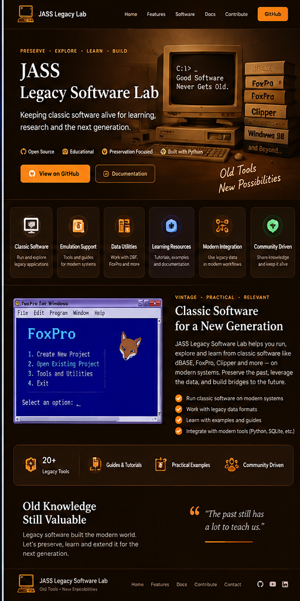

001
Legacy Systems
Explore classic dBase, FoxPro, xBase and DOS-era workflows.

Preserve. Explore. Learn. Build.
A practical laboratory for understanding, preserving and modernizing dBase, FoxPro, DBF and other legacy software and data systems.
Open source, practical and built as part of the JASS software laboratory.
Focused capabilities, clear workflows and a maintainable foundation.
Explore classic dBase, FoxPro, xBase and DOS-era workflows.
Inspect and work with long-lived DBF and business data.
Connect legacy data with Python, SQLite, PostgreSQL and PySide6.
A practical technology foundation selected for local, maintainable and extensible software.